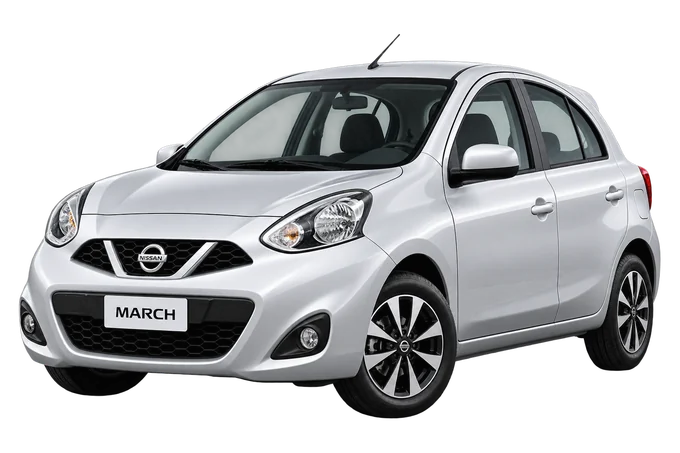
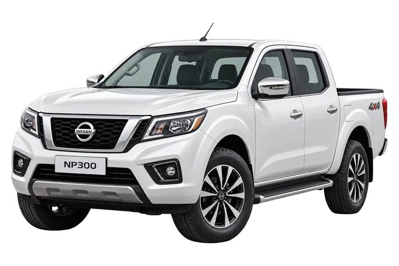
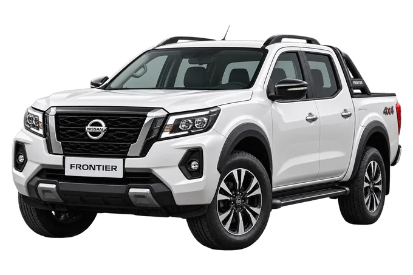
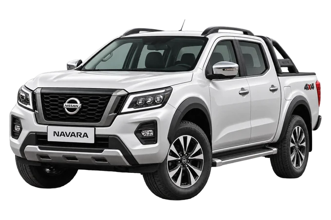

Revisión periódica
Preventiva y correctiva. Te decimos qué está bien, qué hay que arreglar ya y qué puede esperar.
Ver el servicio →Diagnóstico preciso, mantenimiento confiable y soluciones reales para que sigas en la vía. Atendemos Bogotá con equipo especializado en la marca.
Más que un taller,
especialistas en tu Nissan
Solo Nissan, desde el primer día.
Leemos el módulo del carro. No trabajamos a oído.
El precio completo lo sabes antes de que toquemos el carro.
Mantenimiento, diagnóstico y reparación con equipo especializado en la marca. Cada servicio tiene su página, con lo que incluye y cuánto se demora.
Preventiva y correctiva. Te decimos qué está bien, qué hay que arreglar ya y qué puede esperar.
Ver el servicio →Conectamos el escáner, leemos los códigos y te explicamos qué encontró.
Ver el servicio →Sincronización, empaques, inyección y el ruido que lleva meses molestando.
Ver el servicio →Pastillas, discos, amortiguadores y la alineación que se siente al volante.
Ver el servicio →Batería, alternador, arranque y esas fallas raras que aparecen y desaparecen solas.
Ver el servicio →Si el carro se va para un lado o el timón vibra, se siente al primer kilómetro después.
Ver el servicio →Un Nissan no se arregla igual que los demás. Su electrónica, sus tiempos y sus fallas típicas son suyos, y el que no los conoce empieza a cambiar piezas para ver si pega.
Diez años viendo los mismos motores y las mismas fallas. Reconocemos el ruido antes de abrir.
El escáner nos da el código y nosotros te decimos qué significa, antes de tocar una pieza.
Originales y homologados. Si hay una alternativa buena y más barata, te la decimos con los dos precios.
Hablas con quien hace el trabajo. Aquí no hay un asesor repitiendo lo que le dijeron.
Nuestra nave en Bogotá. Cada carro entra con diagnóstico y sale con el trabajo explicado.
Escríbenos por WhatsApp y te decimos qué revisamos primero. Te responde una persona, no un robot.

March Kicks X-Trail Qashqai
NP300
Frontier Tiida
NavaraSi el tuyo no está en la lista, escríbenos igual. Atendemos Nissan nuevos y de años atrás.
Elige lo que estás sintiendo y te decimos qué revisamos primero. Sin costo y sin compromiso.
Elige un síntoma de la lista y aquí te decimos por dónde empezamos.
Ningún trabajo empieza sin que sepas qué tiene el carro y cuánto cuesta arreglarlo.
Cuenta qué siente el carro por WhatsApp. Le responde una persona, no un robot.
Conectamos el escáner y revisamos. Te contamos qué encontramos.
Te damos el precio completo antes de empezar. Si dices que no, no se hace.
Con la fecha dicha desde el principio, y te explicamos qué le hicimos.
Nadie aquí aprendió con tu Nissan. Llevamos diez años en la misma marca, y esa es la diferencia entre cambiar piezas y arreglar el problema.
Estamos reuniendo las reseñas verificadas de Google. Si ya nos visitaste, la tuya nos ayuda muchísimo.
Una reseña tuya vale más que cualquier cosa que nosotros escribamos en esta página. Toma un minuto.
Aquí van las reseñas reales de clientes, con nombre y modelo del Nissan.
Este espacio se llena en cuanto lleguen las primeras.
Si la tuya no está aquí, escríbenos por WhatsApp y te la respondemos hoy.
Estamos en Bogotá, sobre la Carrera 70G. La entrada del taller es el portón blanco que queda a la izquierda del aviso.
Busca este aviso sobre la Carrera 70G.
Te respondemos hoy y te decimos qué revisamos primero, sin compromiso.